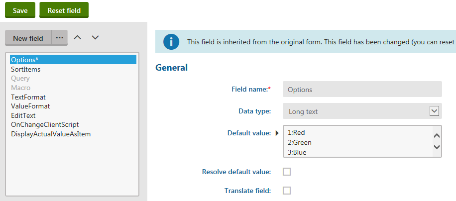

Inheriting from existing form controls
When creating a new form control, you can inherit from an existing control instead of starting from scratch. Inherited form controls work the same way as their parent, but you can:
Change the form control's general settings (i.e. set where the control can be used)
Modify the form control's parameters and set their default values
Assign an extender class for advanced adjustments of the parent's original functionality (see Customizing inherited form controls using extenders)
Inheritance allows you to create specialized controls based on general ones. For example, specialized inherited form controls can be useful for users who create forms using the Form builder.
Example – Creating an inherited form control
The following example demonstrates how to create an inherited form control that defines a reusable drop-down list with a predefined set of options.
Open the Form controls application.
Click New form control.
Set the following options for the new form control:
Control source: Inherit from an existing
Display name: Custom selector
Type: Selector
Inherit from: Drop-down list
Click Save.
Select the following options on the General tab:
High priority: yes (allows users to use the form control in the Form builder)
Use control for: Text
Show control in: Forms (and set the Column size to 100)
Click Save.
Switch to the Properties tab.
Adjust the form control parameters according to your requirements. For example, set a default value for the Options parameter:
Select Options in the list of fields.
Type a list of value;name pairs into the Default value area.
Click Save.

Setting the default value for the property of an inherited form controlTips:
You can customize inherited form controls by adding new fields.
Click Reset field to revert all settings of a modified parameter back to the original state (the system copies the field settings from the parent form control).
See also: Defining form control parameters
You have created your own specialized drop-down list form control, which users can utilize in the Form builder.
Customizing inherited form controls using extenders
Developers can adjust the functionality of inherited form controls by creating and assigning extender classes. An extender contains custom code that runs in addition to the code of the parent control. This allows more flexible customization than the configuration options provided by the parent form control's parameters. For example, you can use extenders to dynamically set the form control's properties or assign handler methods to events that occur during the control's life cycle (e.g. form validation).
To develop a new extender, you need to create a class and write the required code:
Open your project in Visual Studio (using the WebSite.sln or WebApp.sln file).
Add a new class:
Recommended: Create a new assembly (Class library project) in your solution and include the extender class there. You need to add the appropriate references from the assembly to any required Kentico DLLs, and from the Kentico web project to the custom project.
– OR –Add the extender class to the App_Code folder in the Kentico web project and register it via the API (this approach is not recommended for production sites).
Extender naming convention: We recommend using the Extender suffix in the name of the class and the corresponding file.
Make the class inherit from the ControlExtender<FormEngineUserControl> base class (located under the CMS.Base.Web.UI namespace).
Override the OnInit() method in the extender class.
You can add any custom code, for example assign handler methods to form events.
You can access the control instance through the Control property of the extender class.
usingCMS.Base.Web.UI;usingCMS.FormEngine.Web.UI;publicclassCustomExtender : ControlExtender<FormEngineUserControl>{publicoverridevoidOnInit(){}}Add any other code required to implement your custom functionality (such as the handler methods assigned to events in the OnInit method).
Save the file (build your custom project, or the entire solution if using a Kentico web application project).
To assign the extender to your inherited form control:
Open the Form controls application.
Edit the inherited form control.
On the General tab, select your extender class in the Control extender section:
Assembly name – the name of the assembly where the extender is implemented.
Class – the exact class that defines the extender's functionality (including any namespaces).
Click Save.
The extender code now runs when displaying any form containing a field with the given inherited form control.
Example
The following example demonstrates how to create an extender for a form control inherited from the Drop-down list. The example sets the value of the form control's options parameter (defines the options available in the selector) and performs custom validation for the value of the given form field.
Prepare a separate project for custom classes in your Kentico solution:
Open your Kentico solution in Visual Studio.
Create a new Class Library project in the Kentico solution named CustomExtenders.
Add references to the required Kentico libraries (DLLs) for the new project:
Right-click the project and select Add -> Reference.
Click the Assemblies -> Framework tab in the Reference manager dialog and select the System.Web assembly.
Switch to the Browse tab, click Browse, and navigate to the Lib folder of your Kentico web project.
Add references to the following libraries:
CMS.Base.dll
CMS.Base.Web.UI.dll
CMS.Core.dll
CMS.FormEngine.dll
CMS.FormEngine.Web.UI.dll
Reference the CustomExtenders project from the Kentico web project (CMSApp or CMS).
Continue by adding the extender class:
Create a new class under the CustomExtenders project, inheriting from ControlExtender<FormEngineUserControl>:
usingSystem;usingSystem.Collections.Generic;usingCMS.Base.Web.UI;usingCMS.FormEngine.Web.UI;namespaceCustomExtenders{publicclassCustomSelectorExtender : ControlExtender<FormEngineUserControl>{// Adds custom code that runs when the extended form control is loaded into a formpublicoverridevoidOnInit(){// Assigns a handler to the form control's initialization eventControl.Init += Control_Init;// Sets the value of the form control's "options" parameter// This defines the options available in the selectorvaroptionValues =newList<string>{";(select a value)","value1;Name 1","value2;Name 2","value3;Name 3"};Control.SetValue("options", String.Join(Environment.NewLine, optionValues));}// Handler method that runs during the initialization of the form controlprivatevoidControl_Init(objectsender, EventArgs e){// Checks that the control is loaded within a Kentico form (BasicForm)if(Control.Form !=null){// Assigns a handler to the validation event of the form containing the controlControl.Form.OnItemValidation += Form_OnItemValidation;}}// Handler method for the validation event of the related formprivatevoidForm_OnItemValidation(objectsender,refstringerrorMessage){// Ensures that the custom validation only applies to fields using the extended form control// (the event is triggered for all items within the given form)if(sender == Control){// Displays a validation error message if the form control's value is empty// (if the first '(select a value)' option is selected)if(String.IsNullOrEmpty(Convert.ToString(Control.Value))){errorMessage ="Please select a value.";}}}}}Save all changes and Build the CustomExtenders project.
To apply the extender to the form control:
Open the Form controls application.
Edit the inherited form control.
On the General tab, select your extender class in the Control extender section:
Assembly name: CustomExtenders
Class: CustomExtenders.CustomSelectorExtender
Click Save.
If you assign the inherited form control to a form field and view the resulting form, the extender ensures sets the options available in the selector and adds custom validation that prevents users from saving an empty value (i.e. the "(select a value)" option).